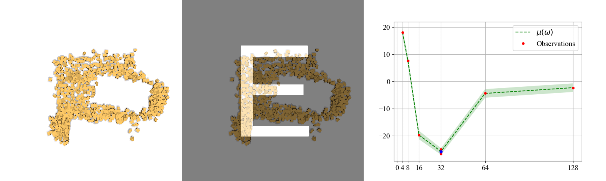
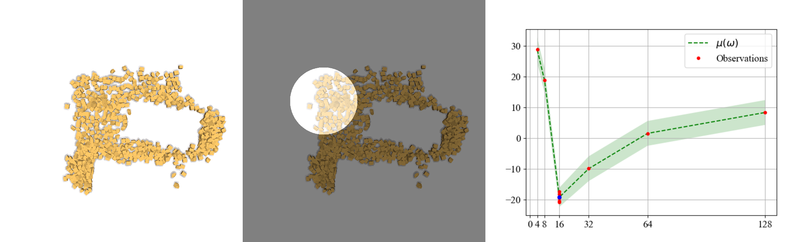
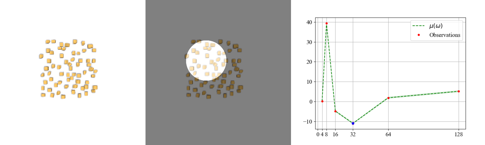
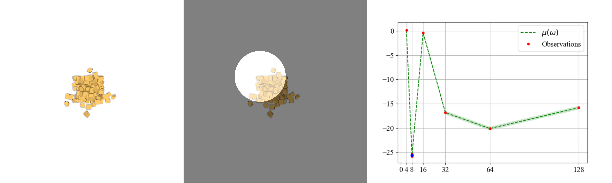

Rebuttal
1. Hallucination of CNN

Example 1

Example 2
2. Trade-off for CNN resolutions


The same init example


The same goal example
2. Dynamic-Resolution CNN
CNN 4
Example 1
Example 2
The same init example
The same goal example
CNN 4